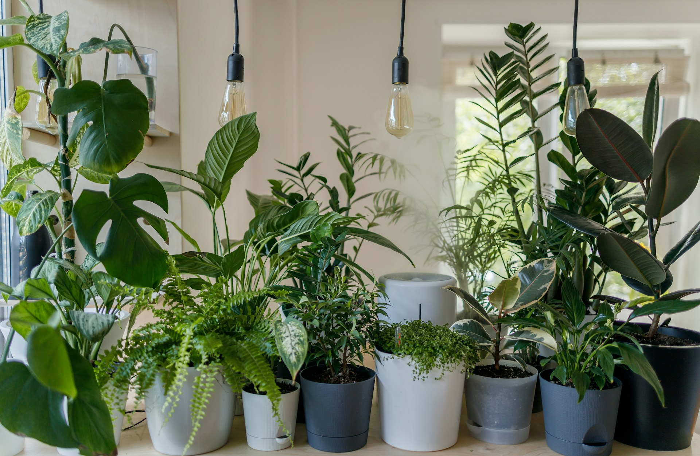
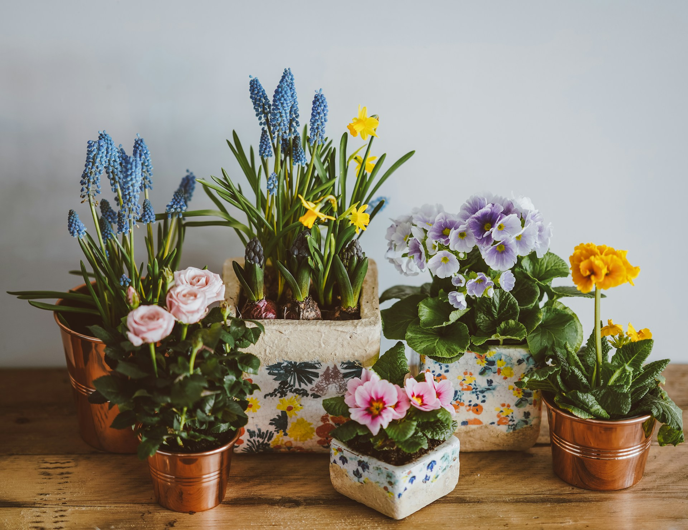
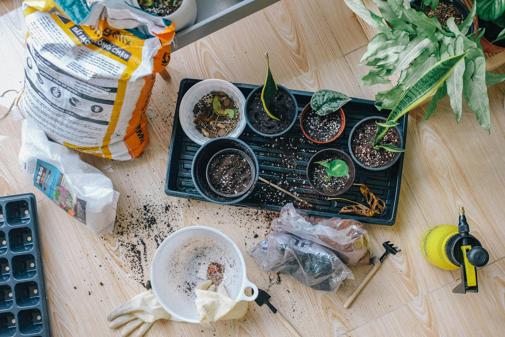

Houseplants
Starting from GH₵ 25
Houseplants, pots and soil, with friendly advice on keeping them alive
See what we sellOpen Monday to Saturday , 8:00am to 6:00pm. Closed on Sundays.
We carry a wide variety of plants for your home and office. Whether you are a first-time plant owner or an experienced gardener, we have something for you. Come visit us in the shop!

Starting from GH₵ 25

Starting from GH₵ 15

Starting from GH₵ 10
Ama has been running her plant shop in the neighbourhood for over 5 years now. She loves plants and wants to help everyone keep their plants alive and thriving. If you are not sure what plant is right for you, just ask her!
Click on a topic below to read the care guide for that type of plant.
Watering: Water every 5 to 7 days when the top inch of soil feels dry.
Lighting: Keep your plant near a window with indirect sunlight. Avoid direct afternoon sunlight.
Important reminder: Do not leave your plant standing in water. Too much water can damage its roots.
Watering: Water deeply once every two to three weeks. Allow the soil to dry out completely between waterings.
Lighting: Place your succulents and cacti where they receive bright, direct sunlight.
Important reminder: These plants store water in their leaves and stems, so avoid watering them too frequently.
Watering and humidity: Mist the leaves regularly or place a tray of water near the plant to maintain moisture in the air.
Temperature: Keep your tropical plants in warm conditions.
Important reminder: Keep plants away from cold drafts and air conditioning vents.
Watering: Water regularly, especially during the dry season. Water early in the morning or late in the evening to reduce evaporation.
Feeding: Use a general-purpose fertiliser every four to six weeks during the growing season.
Have a question about a plant? Call us on 0244 000 000, or ask Ama in the shop
Leave your name, phone number and a message for Ama
WhatsApp Us